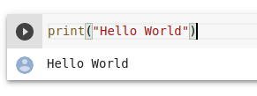

<!DOCTYPE html>
<html lang="en">
  <head>
    <meta charset="utf-8" />
    <meta name="viewport" content="width=device-width, initial-scale=1.0, maximum-scale=1.0, user-scalable=no" />

    <title>reveal-md</title>
    <link rel="shortcut icon" href="./favicon.ico"/>
    <link rel="stylesheet" href="./dist/reveal.css" />
    <link rel="stylesheet" href="./dist/theme/white.css" id="theme" />
    <link rel="stylesheet" href="./css/highlight/zenburn.css" />
    <link rel="stylesheet" href="./_assets/slide-style.css" />
<!--      Add custom google fonts-->
      <link rel="stylesheet" href="https://fonts.googleapis.com/css?family=Crimson+Pro">

  </head>
  <body>
    <div class="reveal">
      <div class="slides"><section  data-markdown><script type="text/template"># Introduction to Deep Learning Course
Twin Karmakharm
</script></section><section  data-markdown><script type="text/template">
<!-- .slide: data-background="/assets/img/rse-logo.svg" -->
<!-- .slide: data-background-opacity="0.4" -->

### Research Software Engineering Sheffield

* Increasing research impact through software
* Support and consultancy in research software and systems development and maintenance
    * Grant support
* Software optimisation, GPU and HPC
* Training, outreach and education activities
* Led by Dr. Paul Richmond
</script></section><section  data-markdown><script type="text/template">
### Contents Overview

* Introduction to Deep Learning
* Neural Networks
* Model training
* Regularisation and Hyperparameters
* Convolution

</script></section><section  data-markdown><script type="text/template">
### Practical Labs Using Google Colab
A platform to run lab code interactively



`Shift+Enter` to run code, or use the 'Play' button on top-left 

`Ctrl+Space` to get code suggestion
</script></section><section  data-markdown><script type="text/template">

### Practical Labs Using Jupyter Notebooks
A platform to run lab code interactively


`Shift+Enter` to run code

`Tab` to get code suggestion


</script></section></div>
    </div>

    <script src="./dist/reveal.js"></script>

    <script src="./plugin/markdown/markdown.js"></script>
    <script src="./plugin/highlight/highlight.js"></script>
    <script src="./plugin/zoom/zoom.js"></script>
    <script src="./plugin/notes/notes.js"></script>
    <script src="./plugin/math/math.js"></script>
    <script>
      function extend() {
        var target = {};
        for (var i = 0; i < arguments.length; i++) {
          var source = arguments[i];
          for (var key in source) {
            if (source.hasOwnProperty(key)) {
              target[key] = source[key];
            }
          }
        }
        return target;
      }

      // default options to init reveal.js
      var defaultOptions = {
        controls: true,
        progress: true,
        history: true,
        center: true,
        transition: 'default', // none/fade/slide/convex/concave/zoom
        plugins: [
          RevealMarkdown,
          RevealHighlight,
          RevealZoom,
          RevealNotes,
          RevealMath
        ]
      };

      // options from URL query string
      var queryOptions = Reveal().getQueryHash() || {};

      var options = extend(defaultOptions, {"width":1280,"height":720,"transition":"slide","slideNumber":true}, queryOptions);
    </script>


    <script>
      Reveal.initialize(options);
    </script>
  </body>
</html>
